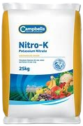
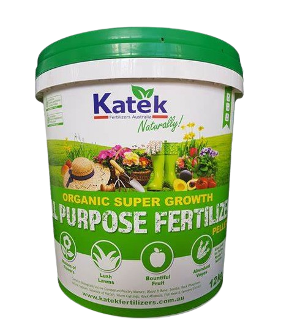
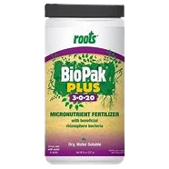

Potassium Fertilizers

Description: Potassium enhances water retention, disease resistance, and overall plant strength. It is
important for plant metabolism.
Common Types:
Potassium Chloride (Muriate of Potash)
Potassium Sulfate
Usage: Potassium fertilizers can be applied during the growing season to strengthen plants and improve
drought resistance.
Organic Fertilizers

Description: Organic fertilizers, made from plant and animal waste, release nutrients slowly and improve
soil structure over time.
Common Types:
Compost
Manure
Bone Meal
Usage: Organic fertilizers are often applied before planting and can be mixed into the soil to improve
fertility over time.
Micronutrient Fertilizers

Description: Micronutrients like zinc, iron, and magnesium are essential for plant health and growth,
even though they are needed in smaller quantities.
Common Types:
Zinc Sulfate
Iron Chelates
Magnesium Sulfate (Epsom Salt)
Usage: Micronutrient deficiencies can be corrected by adding these fertilizers, often as foliar sprays
or soil amendments.